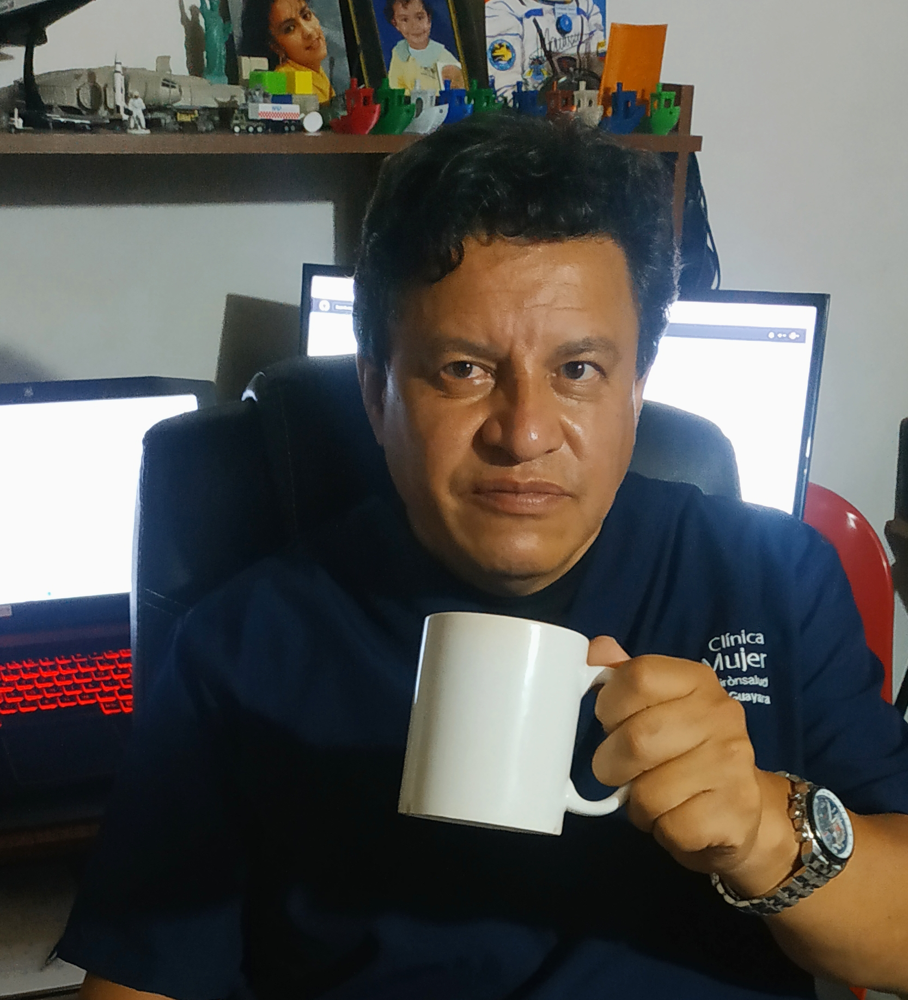
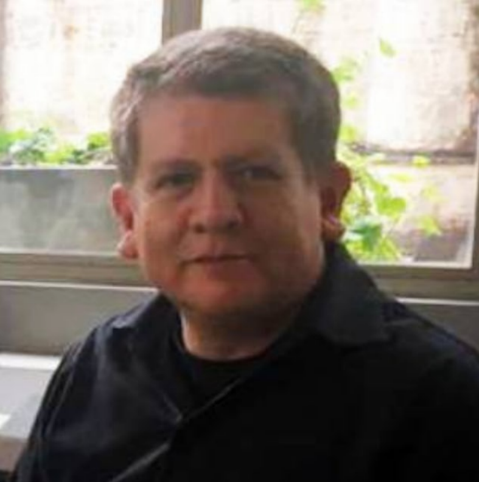

NOSOTROS
Este es el equipo de trabajo del Proyecto Apollo XVIII
Monica A. Angulo P.
Ingeniera de Sistemas del Politécnico Grancolombiano, con experiencia en desarrollo de software, Gerencia de proyectos y, conocimiento y aplicación de metodologías, modelos y normas de calidad enfocadas en el área TI. (SCRUM, CMMI, ITMARK, ITIL, ISO27000, ISO20000).
"Amigos y café, la mejor combinación"

Técnico en Sistemas y Computación - Desarrollador de software durante más de veinte años, astrónomo aficionado, fotógrafo y amante de la ciencia ficción.
"En cada sorbo de café hay una buena idea escondida"
Edgar Orozco Guaraya
Técnico en Sistemas y Computación - Desarrollador de software durante más de veinte años, astrónomo aficionado, fotógrafo y amante de la ciencia ficción.
"En cada sorbo de café hay una buena idea escondida"

Jose Luis Rassa Novoa
Comunicador Social - Periodista de la Universidad de la Sabana. Amplia experiencia en investigación de mercados, análisis de datos, técnicas de recolección de información y diseño de estrategias de planeación estratégica.
"La felicidad es un buen libro y una taza de café"

Ingeniero Electronico - Universidad Santo Tomas de Aquino - Con extensa experiencia en desarrollo de maquinaria CNC (Control Numerico Computarizado), cortadoras y mecanizadoras automatizadas para diferentes tipos de matieriales, Impresoras 3D, músico aficionado.
"Cafe, el origen y combustible de grandes proyectos"
Mauricio H. Ruiz Diaz
Ingeniero Electronico - Universidad Santo Tomas de Aquino - Con extensa experiencia en desarrollo de maquinaria CNC (Control Numerico Computarizado), cortadoras y mecanizadoras automatizadas para diferentes tipos de matieriales, Impresoras 3D, músico aficionado.
"Cafe, el origen y combustible de grandes proyectos"